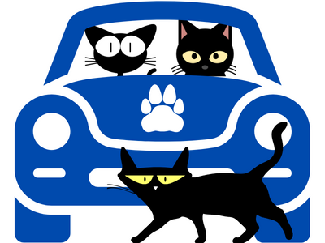
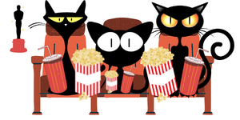

GATO NEGRO
"LA MALA SUERTE ES CRIAR A UN SER HUMANO IGNORANTE"
Si hay un animal asociado al infortunio y al ocultismo ese es el gato negro.
Desde tiempos
remotos, los gatos negros se han relacionado con todo tipo
de desgracias y su vinculación con la
mala suerte lo precede.

¿Por qué cruzarse con
¿Por qué cruzarse con
un gato negro trae mala suerte?

3 Películas imperdibles sobre Gatos
x
¿Te gusta nuestra web?